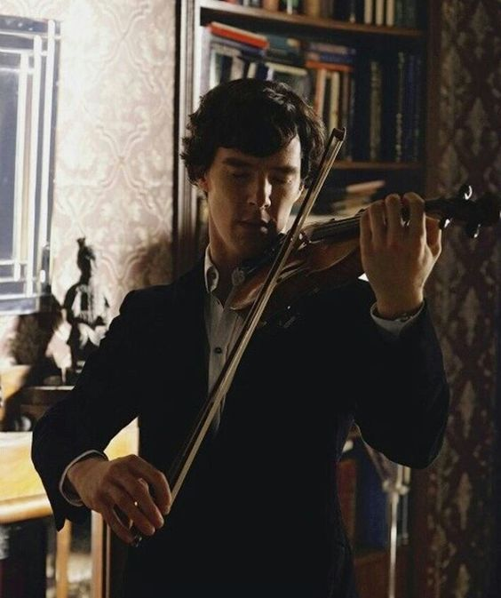
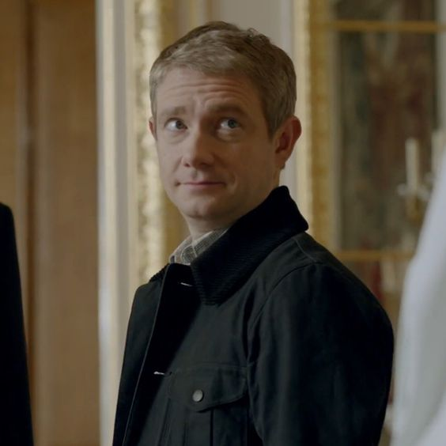
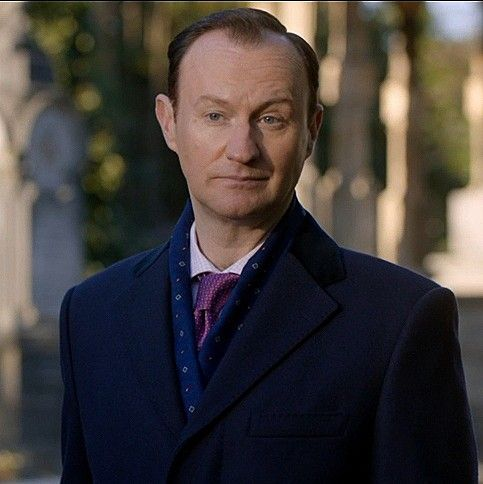
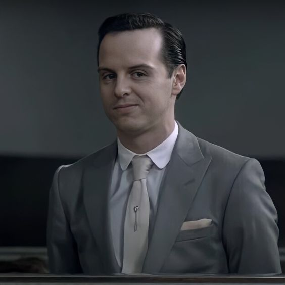
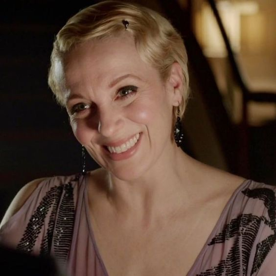
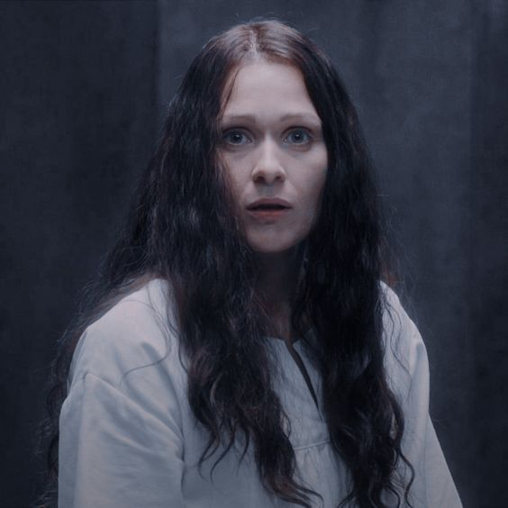
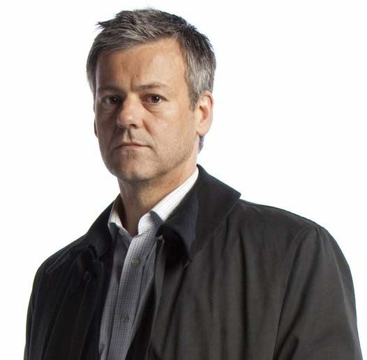

Sherlock Holmes
A série Sherlock Holmes da Netflix foi lançada em 25 de julho de 2010, ela contém cinco temporadas
onde o personagem principal desvenda mistérios junto ao seu amigo John Watson,segue o trailer da
primeira temporada para que você se interesse ainda mais pela série:
>amigos verdadeiros. Sherlock é muito inteligente, observador e arrogante. O detetive, além disso, é um excelente violinista
Dr John H. Watson é um médico, e anteriormente fazia parte do Exército Americano. Ele era casado
com Mary Watson e é sem dúvida o único amigo e confidente de Sherlock Holmes.
Mycroft Holmes é o irmão mais velho de Sherlock Holmes. Ele é mais observador do que o seu irmão mais
novo; entretanto, ele não tem a energia e dedicação necessários para usar esse poder da mesma maneira que o seu irmão usa.
Professor Moriarty, o arqui-inimigo do famoso detetive Sherlock Holmes, um professor de matemática que se
tornou um criminoso. A sua inteligência é a mesma, se não maior, do que a de Holmes.
Mary Watson é a esposa de John Watson, ela é uma mulher muito inteligente e corajosa e durante
a história ela tem que contar segredos importantes sobre ela.
Eurus Holmes é a irmã 'secreta' de Sherlock e Mycroft Holmes, ela não é uma personagem original dos livros de Sir Arthur Conan Doyle
(criador dos livros de Sherlock Holmes), sendo apresentada apenas na série 'Sherlock' no final da quarta temporada.
é frequentemente retratado como um pouco desajeitado e desastrado, muitas vezes tropeçando em seus próprios pés ou cometendo erros em
suas investigações. No entanto, ele também é mostrado como um policial dedicado e trabalhador que genuinamente quer resolver crimes e levar criminosos à justiça.
